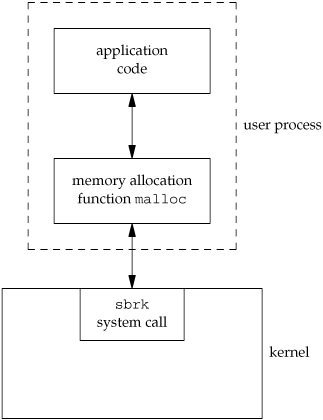

1.11. System Calls and Library FunctionsAll operating systems provide service points through which programs request services from the kernel. All implementations of the UNIX System provide a well-defined, limited number of entry points directly into the kernel called system calls (recall Figure 1.1). Version 7 of the Research UNIX System provided about 50 system calls, 4.4BSD provided about 110, and SVR4 had around 120. Linux has anywhere between 240 and 260 system calls, depending on the version. FreeBSD has around 320. The system call interface has always been documented in Section 2 of the UNIX Programmer's Manual. Its definition is in the C language, regardless of the actual implementation technique used on any given system to invoke a system call. This differs from many older operating systems, which traditionally defined the kernel entry points in the assembler language of the machine. The technique used on UNIX systems is for each system call to have a function of the same name in the standard C library. The user process calls this function, using the standard C calling sequence. This function then invokes the appropriate kernel service, using whatever technique is required on the system. For example, the function may put one or more of the C arguments into general registers and then execute some machine instruction that generates a software interrupt in the kernel. For our purposes, we can consider the system calls as being C functions. Section 3 of the UNIX Programmer's Manual defines the general-purpose functions available to programmers. These functions aren't entry points into the kernel, although they may invoke one or more of the kernel's system calls. For example, the printf function may use the write system call to output a string, but the strcpy (copy a string) and atoi (convert ASCII to integer) functions don't involve the kernel at all. From an implementor's point of view, the distinction between a system call and a library function is fundamental. But from a user's perspective, the difference is not as critical. From our perspective in this text, both system calls and library functions appear as normal C functions. Both exist to provide services for application programs. We should realize, however, that we can replace the library functions, if desired, whereas the system calls usually cannot be replaced. Consider the memory allocation function malloc as an example. There are many ways to do memory allocation and its associated garbage collection (best fit, first fit, and so on). No single technique is optimal for all programs. The UNIX system call that handles memory allocation, sbrk(2), is not a general-purpose memory manager. It increases or decreases the address space of the process by a specified number of bytes. How that space is managed is up to the process. The memory allocation function, malloc(3), implements one particular type of allocation. If we don't like its operation, we can define our own malloc function, which will probably use the sbrk system call. In fact, numerous software packages implement their own memory allocation algorithms with the sbrk system call. Figure 1.11 shows the relationship between the application, the malloc function, and the sbrk system call. Figure 1.11. Separation of malloc function and sbrk system call Here we have a clean separation of duties: the system call in the kernel allocates an additional chunk of space on behalf of the process. The malloc library function manages this space from user level. Another example to illustrate the difference between a system call and a library function is the interface the UNIX System provides to determine the current time and date. Some operating systems provide one system call to return the time and another to return the date. Any special handling, such as the switch to or from daylight saving time, is handled by the kernel or requires human intervention. The UNIX System, on the other hand, provides a single system call that returns the number of seconds since the Epoch: midnight, January 1, 1970, Coordinated Universal Time. Any interpretation of this value, such as converting it to a human-readable time and date using the local time zone, is left to the user process. The standard C library provides routines to handle most cases. These library routines handle such details as the various algorithms for daylight saving time. An application can call either a system call or a library routine. Also realize that many library routines invoke a system call. This is shown in Figure 1.12. Figure 1.12. Difference between C library functions and system calls
Another difference between system calls and library functions is that system calls usually provide a minimal interface, whereas library functions often provide more elaborate functionality. We've seen this already in the difference between the sbrk system call and the malloc library function. We'll see this difference later, when we compare the unbuffered I/O functions (Chapter 3) and the standard I/O functions (Chapter 5). The process control system calls (fork, exec, and wait) are usually invoked by the user's application code directly. (Recall the bare-bones shell in Figure 1.7.) But some library routines exist to simplify certain common cases: the system and popen library routines, for example. In Section 8.13, we'll show an implementation of the system function that invokes the basic process control system calls. We'll enhance this example in Section 10.18 to handle signals correctly. To define the interface to the UNIX System that most programmers use, we have to describe both the system calls and some of the library functions. If we described only the sbrk system call, for example, we would skip the more programmer-friendly malloc library function that many applications use. In this text, we'll use the term function to refer to both system calls and library functions, except when the distinction is necessary. |